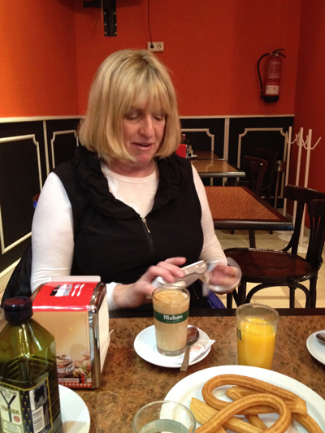
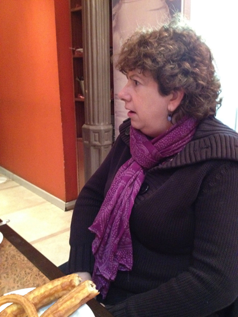
My pal Mandy was going to Madrid for a trade fair, so I went with her - neatly avoiding the sales trip - but took her to meet my cousin Jane who lives in Madrid. We met Jane in a bar for breakfast where her husband took her on their first date. She then took us to the Church of San Francisco el Grande, where his family have already booked (and paid for) his funeral mass ...
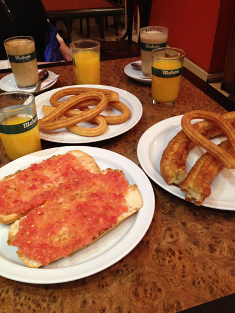
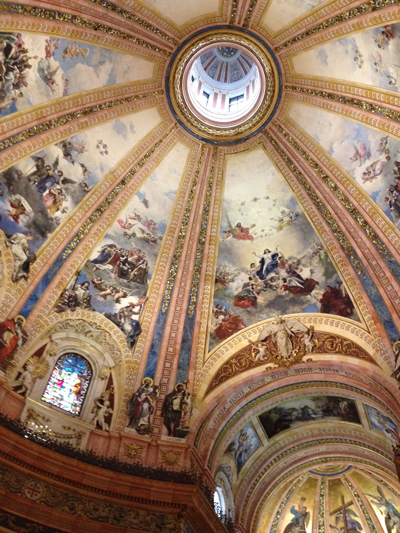
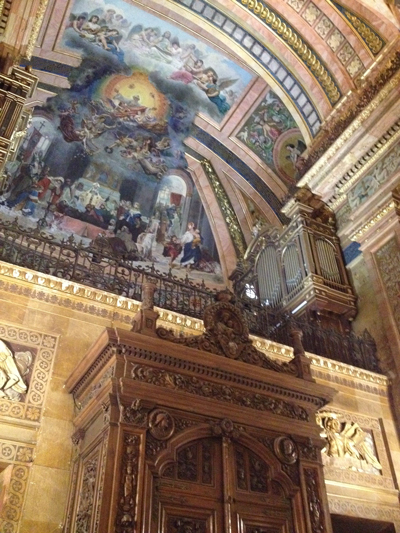
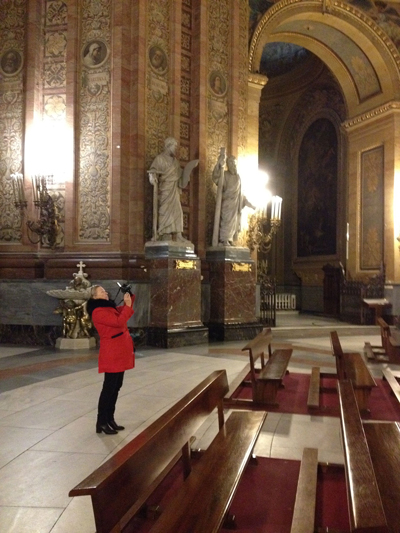
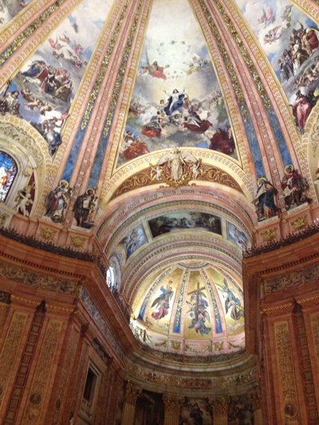
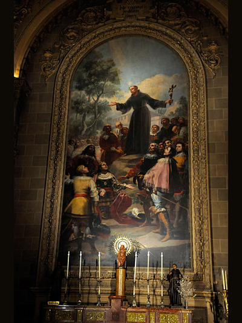
The Church of San Franciso el Grande has been restored over a twenty year period and this magnificent eithteenth-century domed church can now be seen in something close to its original glory. Inside, each of the six chapels is designed in a distinct style ranging from Mozarab and Renaissance to Baroque and Neoclassical. It includes an early Goya painting, The Sermon of San Bernadino of Siena, which itself contains a self-portrait of the 37-year-old artist (in the ochre suit on the extreme right).
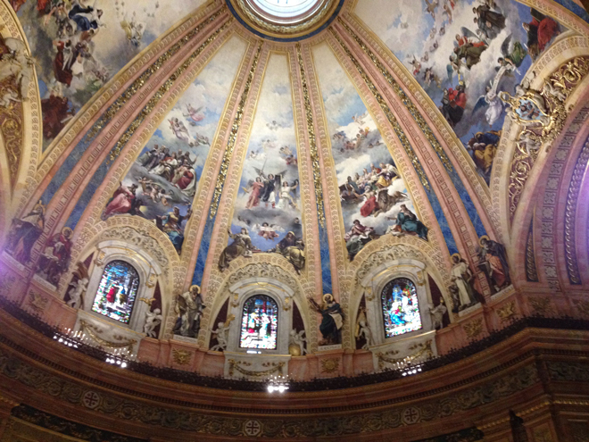
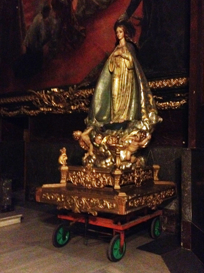
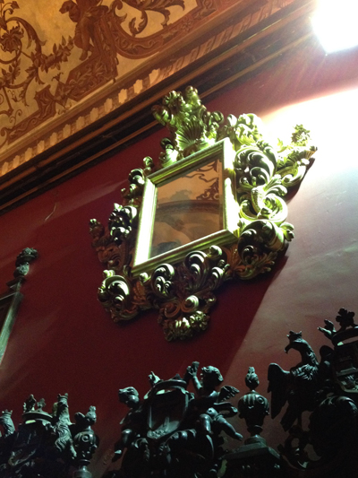
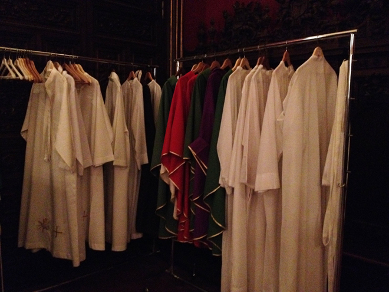
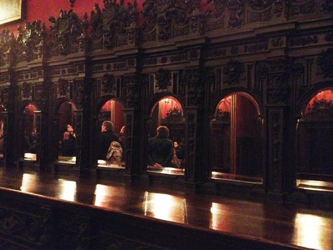
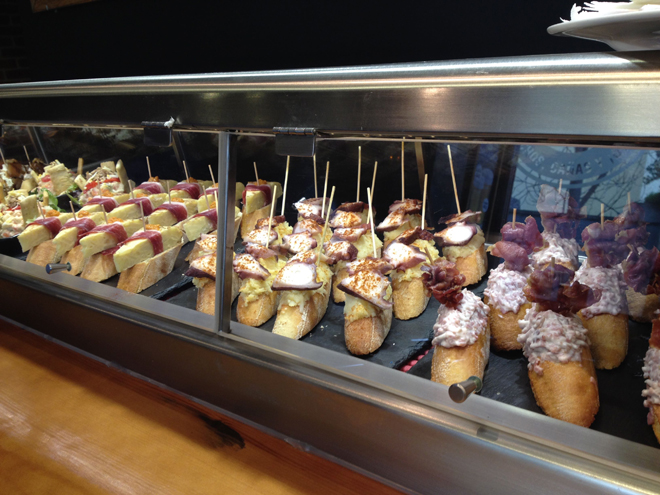
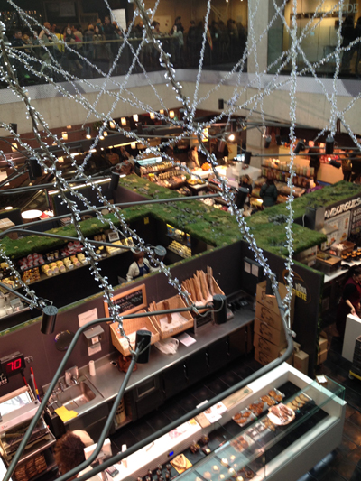
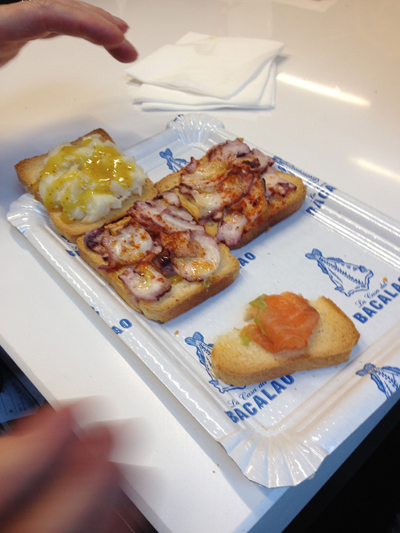
Crossing the Plaza Mayor, we found a superb hat shop and a bizarre woman dressed as a giant rabbit covered with blue tinsel. Even my cousin who lived in Madrid didn't understand what this was about ...
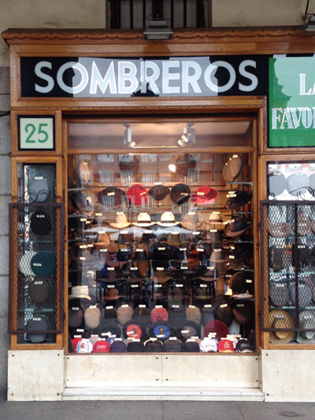
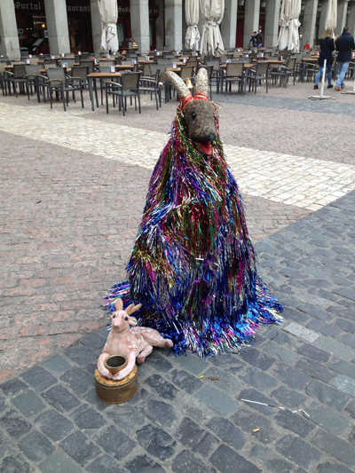
Part museum and part art gallery, the Museo Sorolla is a tribute to an artist's life and work and is one of Madrid's most underrated treasures. Situated in Joaquin Sorolla's former home, it is a delightful oasis of peace and tranquility with a shady Andalusian-style courtyard, an art gallery of his work and extensive collection of trinkets from around the world.
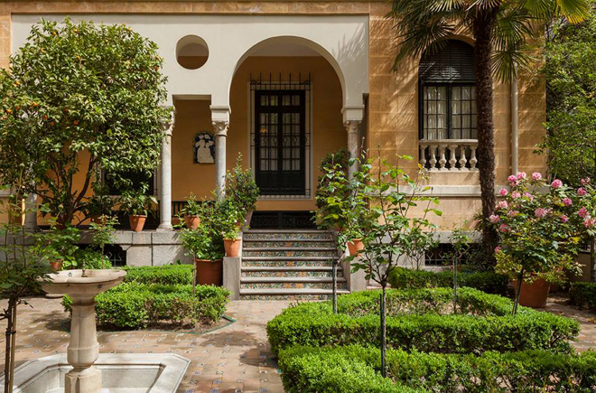
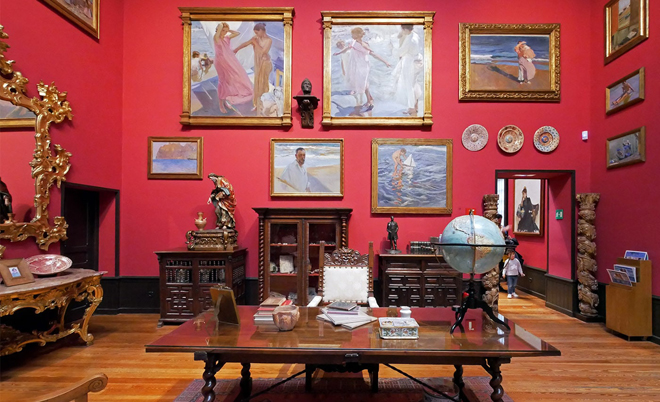
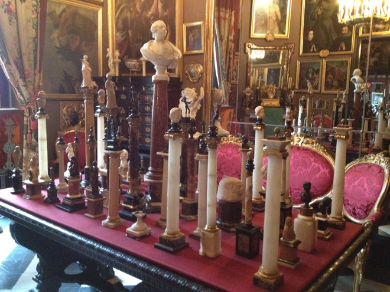
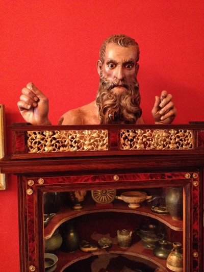
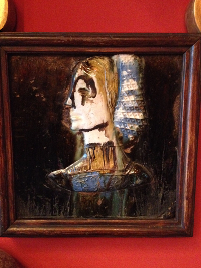
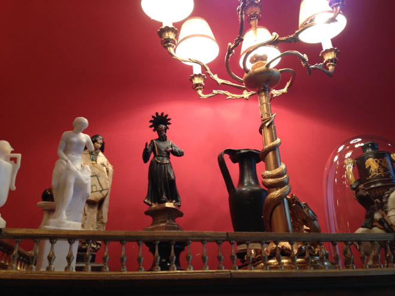
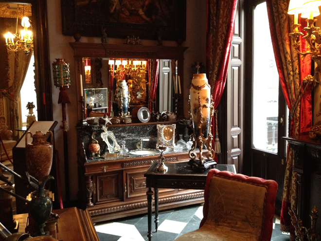
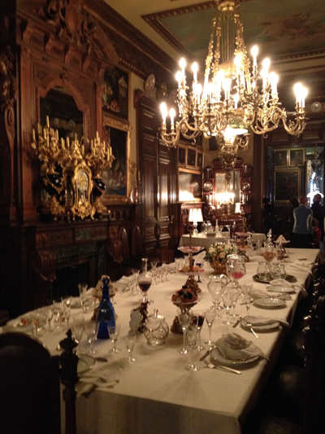
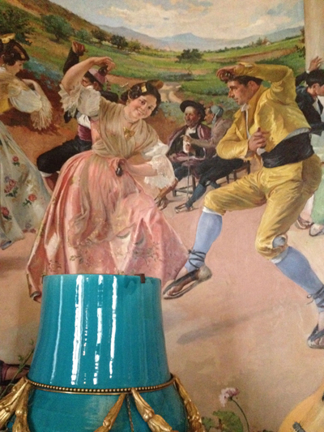
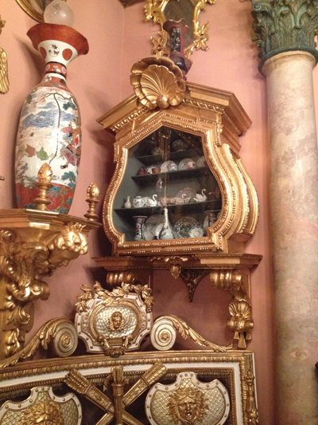
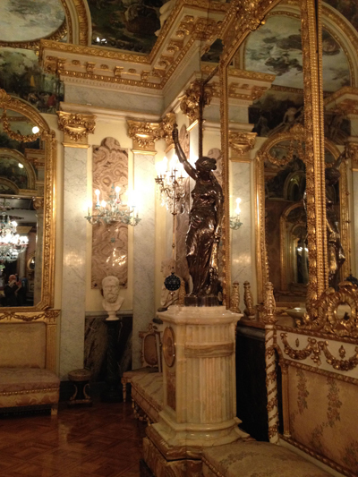
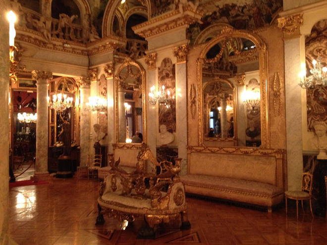
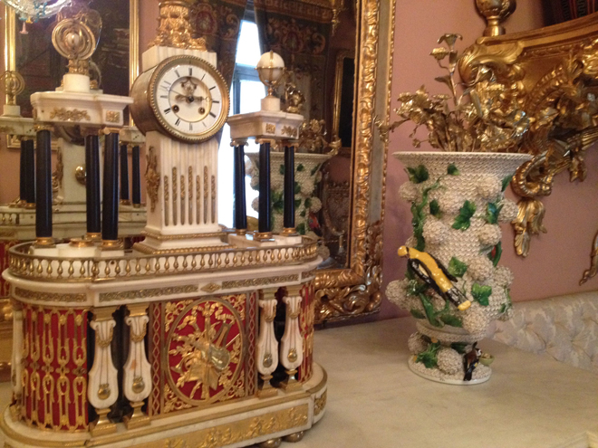
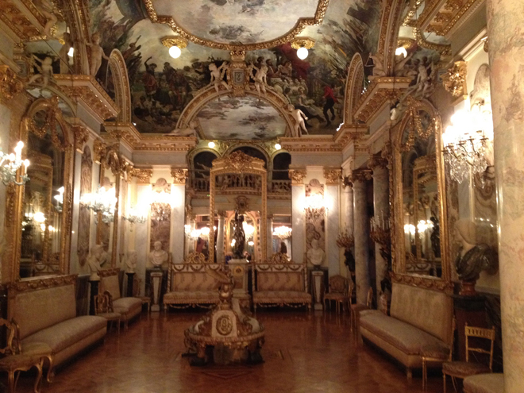